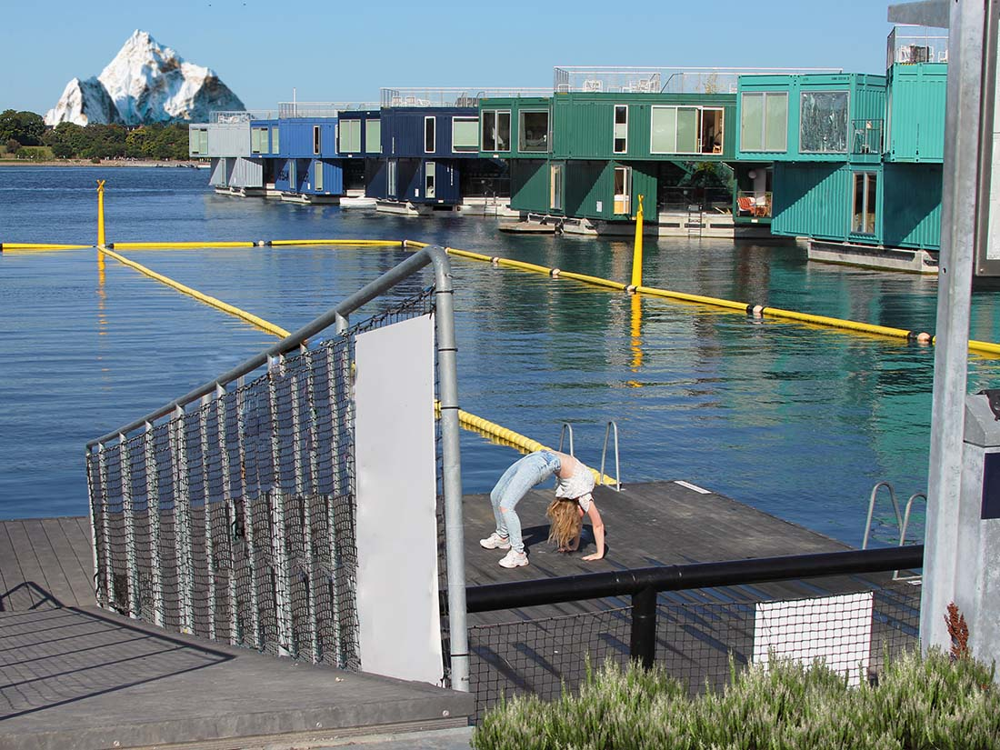

Flow 1 projekt
I flow 1 på første semester (som vores første opgave), fik vi til opgave at photoshoppe et
billede, som havde et tema omkring 'bro'.
Vi fik i denne opgave, nogle specefikke krav til vores billede. Vi skulle:
- Fjerne et element
- Tilføje et element
- Redigere billedets lysforhold
- Beskæring og evt. opretning
